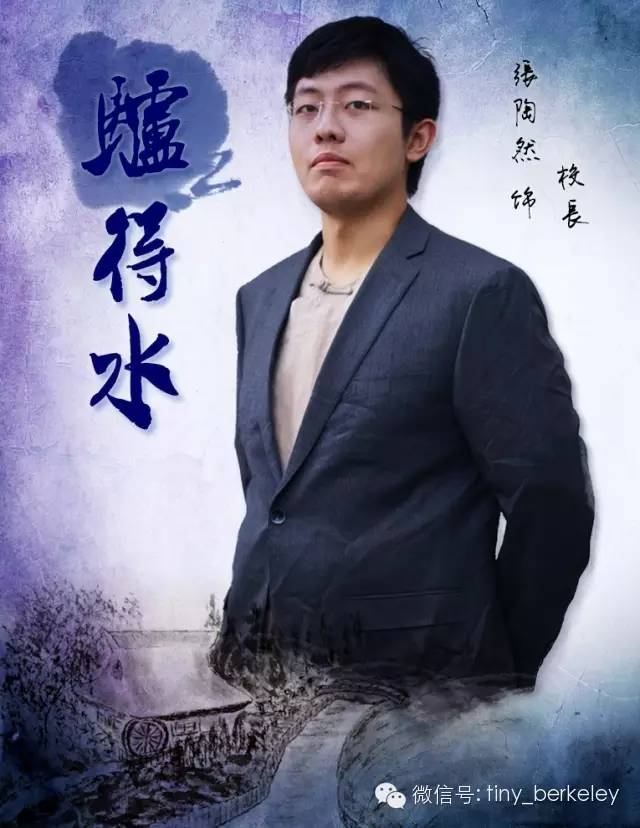
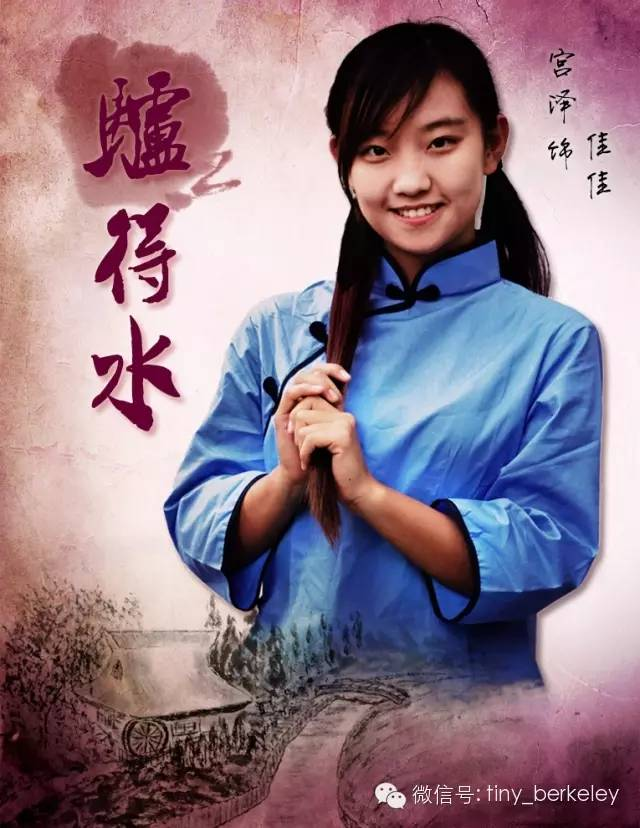
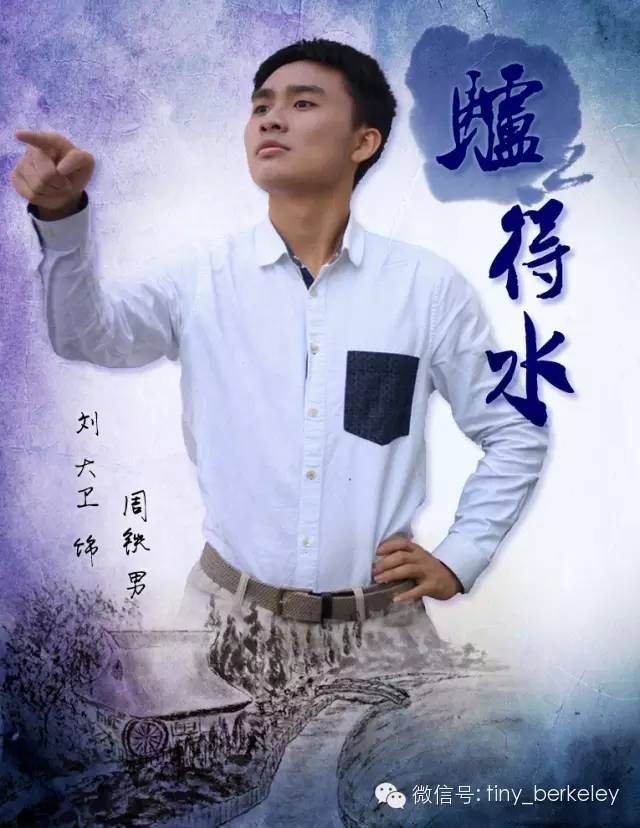
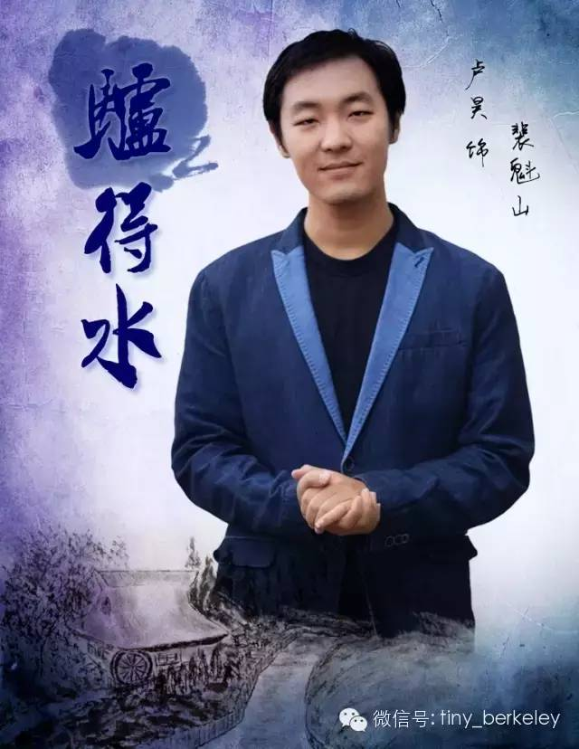
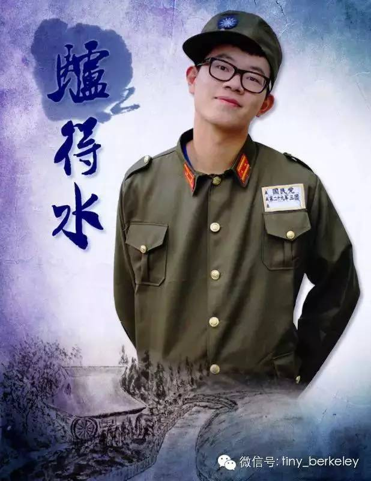
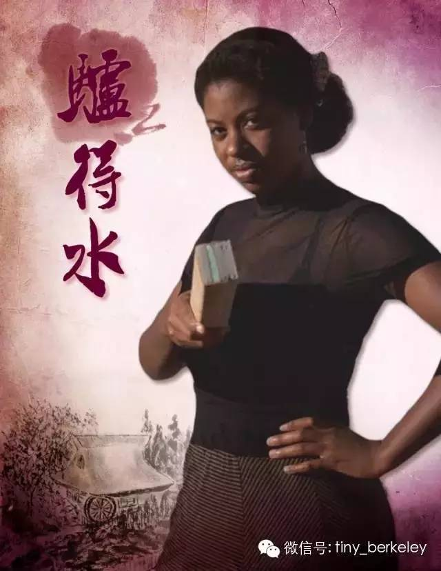

为了让教育深入农村，我抛弃了城市中安逸的生活，带领着三个有同样理想的年轻教师，
从零开始在乡村建起了学校。
每一个美丽而非凡的理想背后，总有一幕幕不为人知的无奈和妥协。没有学生，没有资金，甚至没有水和屋子。有人说我是一个理想主义者，是么？我不知道。
低头还是义无反顾地向前？这个问题很好。许多时候，理想主义者会用尽力气，把全部的努力，灌注于未必有回报的事情中。但是当努力没有得到回报，我们只是强颜欢笑罢了。
我渐渐明白，
理想主义者，并不是一个上苍的馈赠，而是一个包袱。成为一个乐观的悲观主义者，那才是理想主义者成熟的样子。
为了高尚的理想选择向现实低头——在谎言中苟且，是不是比在真实中死去更需要勇气呢？
“别忘了我们的初衷，想想我们为什么来到这里？”

“爸，我求你了，咱们别再骗下去了，咱们像过去那样不是挺好的么？”“爸，你看看他们这些老师都变成什么样儿了！他们还是人么？他们自己都不是人了，还怎么教育别人呢？”
我叫孙佳，大家都叫我佳佳。我今年十五岁了。
两年前，我和爸爸还有其他同事从北平来到了三民小学，从那时起我们就住在这里，这里就是我们的家。
在这里，我有个爱我的爸爸，他什么都想着我，对我百般呵护。我们每天睡在教室里，但是有他在，
我觉得就有一个幸福的家。
在这里，我还能每天见到他。（害羞）他小麦色的皮肤格外性感，头脑聪明，风趣幽默，有追求有抱负，他还特别关心照顾我。我知道他在意我，我也挺喜欢他的。
在这里，还有和爸爸一样为了振兴农村教育事业的一曼姐和魁山老师。
我敬佩他们，支持他们所做的事业。
除了他们以外，我还有个好朋友，叫
驴得水。别看它只是头驴，
能做的事情可多了。我们每天一起挑水，一起赶路，它难过地哭的时候我给它唱歌，他睡觉前我给它讲故事，我有事让它帮忙的时候跟它讲讲道理，它就一定会听话的。我们是很好的朋友。
在这里，即使缺水，几十条件艰苦，但有他们在，我的生活还是很满足的。
可是突然，
一切都变了，爸爸变了，铁男变了，一曼姐和魁山老师都变了，而我的好朋友得水没了。我所坚信的道德没了，真理消失了，这到底是为什么？！我想不通，我需要一个人仔细想一想。

我是周铁男！教自然科学的！
我爸妈给我起了个刚烈的名字！所以我也是一个刚烈的人！
几年前遇到了我们现在三民小学的校长，还有他特别特别特别特别可爱的女儿佳佳！从此我就决定了！
他们的事就是我的事！
我这一生要奉献给农村的教育事业！改变中国农民的贫！愚！弱！私！
我还有一个理想！
就是我这一辈子只对佳佳一个人好！我想让她幸福！我不想让她吃苦！我要让她一直保持这么天真可爱！
可那天可恶的特派员来了！我的理想！我的爱情！我以为我能坚守住的一切的一切！都被摧毁了！
在我
认贼作父的那一瞬间，我觉得我不再是铁男了⋯⋯
爸妈对不起，佳佳对不起！

我突然觉得吧，中国最缺乏教育的或许不是农民。
我是一个立志改变中国农民贫愚弱私的老师。不辞辛劳、不畏困苦的从生活条件优越地大城市来到了一个山村创办小学，可是一切都比预想中的难太多了!
为了每个人都可以维持生存的最基本条件。万般无奈下，我与同事们虚报老师名额来吃空响。我相信我们在来到这个地方之前也绝不会认为我们自己能干出这种事情来。
作为一名教历史的老师，我深知这种行为可以带来一时的利益却也是后患无穷。可是总不能眼睁睁地看着大家还没实现自己的振兴农村教育的理想就出师未捷身先死吧？
我很矛盾，但又无能为力。
同事中有一个一曼老师，她很有魅力。我很喜欢她，还曾经想过要娶她。
然而后来发生了很多始料未及的事情，我失望地发现我喜欢的并不是一曼，而是我心中希望一曼应有的样子。
该来的总会来，教育部派下特派员来考察我们。我也是被眼前的既得利益冲昏了头脑，竟然同意了一件违背本心的事。可是我一个人反对有用吗？为了同事也为了自己，我只能服从特派员的安排、顺从他的意思。别骂我“谄媚”，我也不想这么下作，但谁又有更好的办法啊？
我谨小慎微地做着每一件事情，为了心中的理想去欺骗、挣扎。然而一场闹剧之后，一切回归原点，所有的努力全都变成了无用功。所有人都是那么的滑稽可笑。
“我乐意我高兴！你管得着吗！”
有人贪恋我的容貌和身体，说我是朵纯洁的白莲花；有人把我放在心上，他懂我其实性格刚烈像株曼珠沙华。
我答应了道貌岸然那人的求婚，却告诉那个真心相待的人他在我这里什么都不是。到最后，那些睡我的人，他们说我是交际花；而那个我睡了的人，他说我是婊子。
可是这一切都无关紧要；我的所做所为都对得起自己就够了。所以到最后，
他们笑我太疯癫，我笑他们看不穿。
我是一曼。只是一曼。
我是个铁匠。
我从小到大都生活在这个村沟沟儿里，原来和我爹娘，现在和我媳妇儿。
我每天这么使劲儿的干活，就是希望哪天要是我有了孩子，他们饿不着，冻不着。我这辈子就这么着也挺好，过自个的日子。
后来从山那头来了一群人，说自己是什么老师，话都不好好说，满口净捅些我没听过的词儿。
不过他们怎么着，我可管不着。
不过话说回来， 其实我还是觉得这帮老师都挺朴实的，尤其是那个女老师，虽然衣服的颜色挺花哨，但是两边都裂了口子还不舍得换。
后来我也不知道咋回事，
脑子里老想着跟她多说几句话，但是她真一过来我又不知为啥不敢看她的眼睛。算了，不多想啦，赶紧帮他们修完锁，拿钱回家找老婆去喽。
我是铁匠老婆。
我就是一个普普通通、本本分分的媳妇儿。在村儿里整天忙忙叨叨，种地、做饭、干干家务，也伺候伺候俺爷们铁匠。虽然每天都是干活儿、吃饭、睡觉，也没个啥别的乐趣，但是过日子嘛，没啥别的追求，打理好这个家就行了。
可是万万没想到，铁匠居然做出这么对不起我的事。那个一曼咋好了？长得水灵？会教课？俺俩真是白结婚过日子这么多年了！每天还不都是我在屋里忙前忙后， 咋不想想我呢？！
对，我就是气不过。俺们农村人也不会跟你们讲大道理，别指着我能平心静气跟你们说。这种事儿搁谁头上不都得火冒三丈！
我就爱直来直去，生气就是生气，从来也不拐弯抹角。反正我吃定的事儿不许有跑儿！不给我解决绝不罢休！
说我横也好，说我泼也罢，我都认了。这辈子只能搁农村当个农民了，学不会知识分子那一套。但是铁匠，他是我爷们儿！谁搀和进来破坏俺俩，我跟谁急眼！
他就算有这样那样的缺点，但是我说他是我爷们儿，他就是我爷们儿，这辈子我就认定他了！

我是教育部的李特派员，
身为皇亲国戚的我，是正白旗叶赫那拉氏。曾留学英国4年，攻读工学硕士，主修的是莎士比亚。我可是教育部里仅有的海归人才。
这次来到三民小学，是因为美国著名的慈善家罗斯女士，为了支援我国的农村教育事业发展，决定拿出一笔资金，资助一个优秀的、愿意扎根农村的基层教育家。
而我的责任，就是要选出这个人！部里对这件事情非常重视，要求我一定要多走访几个地方，进行深入细致的考察，慎重、再慎重！
三民小学，是我此次考察的最后一站，也是第一站。
但是我今天终于找到了这位教育家，他就是驴得水老师！

我是一位非常优秀的美国教授。 通过许多年很用心地学习, 我积累了很多关于教学的知识。我是中国通, 很彻底地了解中国语言与文化。
即便如此, 我这几年以来, 一直环游世界, 找出最顶尖的教授。我听说得水驴老师是一位优秀、学问很高的教授, 也听说他的英文与中文讲得一样流利。
虽然他在一个很落后的小村里当老师，他还是尊重并坚持廉正与勤奋之原则。
不过，我怀疑这个学校的老师在瞒着我。这个案子我会调查到底，找出罪魁祸首。没有什么能够阻挡我!